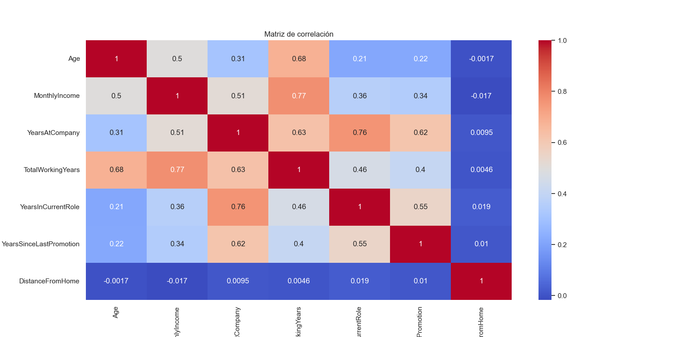
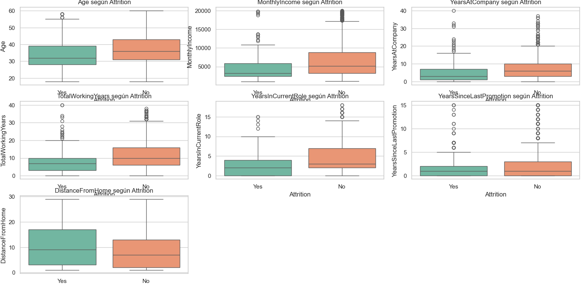
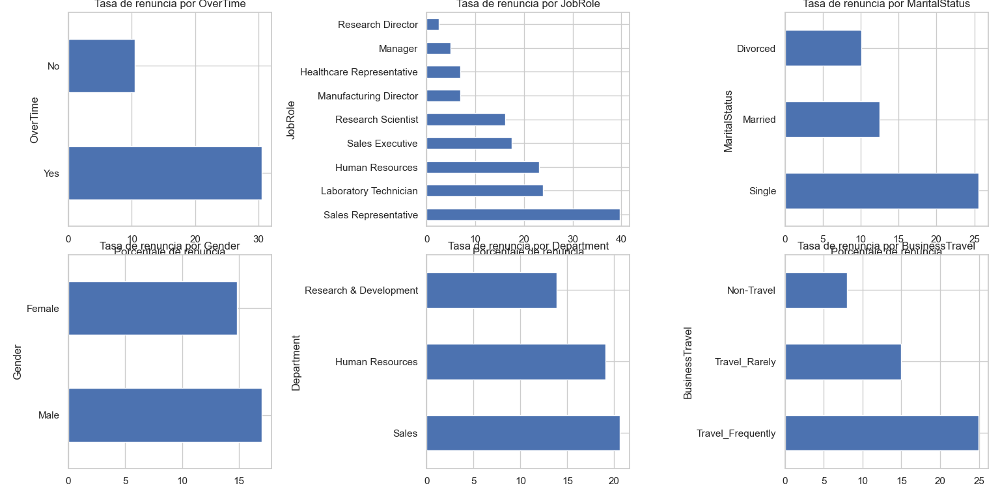

Análisis Exploratorio
- ¿Por qué renuncian los empleados? Un análisis de la rotación de personal en una empresa tecnológica
🎯 Objetivo: Detectar características y factores comunes que están relacionados con los empleados que han dejado la empresa y brindar hallazgos accionables para el área de Recursos Humanos que pueden ayudar a diseñar estrategias de retención de talento más efectivas.
🛠️ Herramientas utilizadas:
- Análisis univariado y bivariado con Python (pandas, seaborn, matplotlib)
- Visualización de distribuciones, boxplots y tasas de renuncia
- Generación de insights enfocados al negocio
📎 Archivos del proyecto:Ver en GitHub

Matriz de correlación entre variables

Diferencias Clave entre Empleados con y sin Rotación

Mapeo de la Rotación: Qué Perfil Tiende a Irse
🧾 Conclusiones del Análisis: Este análisis exploratorio nos permitió identificar tendencias relevantes para la gestión del talento:
- Edad y experiencia: La rotación es más alta entre los empleados jóvenes y con menor antigüedad.
- Sobrecarga y horarios: Aquellos que hacen horas extra están significativamente más expuestos a renunciar.
- Rol y área: Ciertos puestos operativos, como técnicos de laboratorio y vendedores, presentan mayor rotación.
- Factores personales: Los empleados solteros y quienes viven lejos tienen mayores tasas de salida.
- Estos hallazgos pueden ser utilizados para enfocar estrategias de retención más efectivas, como mejorar la flexibilidad laboral, optimizar procesos de promoción interna y brindar seguimiento más cercano a perfiles de riesgo.
🔁 ¿Quieres explorar más proyectos?
Este es solo uno de los flujos que he desarrollado como parte de mi enfoque en automatización inteligente y diseño técnico escalable.